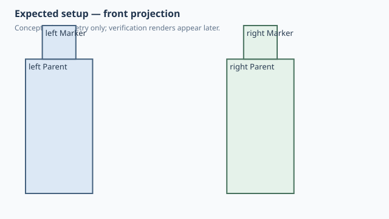

Forge model example
Attachments on repeated parent occurrences
What this example makes
Both markers sit on their own parent TOP face. After parent_height changes in the saved design, both disconnected joint graphs must rebuild so both markers follow the changed top faces.

Forge code
This is the complete Forge source used for this example.
"""Qualification: two repeated parents, each with one attached child."""
class Parent:
_height = 40.0
def build(self):
return Box(20, 20, self._height, anchor=Anchor.BOTTOM)
class Marker:
def build(self):
return Box(10, 10, 10, anchor=Anchor.BOTTOM)
class RepeatedParentAttachments:
parent_height = 40.0
def build(self):
left = Parent(_height=self.parent_height)
right = left.copy(placement=Placement(x=60))
left_marker = Marker().attach(
left,
parent=Anchor.TOP,
child=Anchor.BOTTOM,
)
right_marker = left_marker.copy().attach(
right,
parent=Anchor.TOP,
child=Anchor.BOTTOM,
)
return left + right + left_marker + right_marker
RepeatedParentAttachments()
API used
right = left.copy(placement=Placement(x=60)); marker_a = Marker().attach(left, parent=Anchor.TOP, child=Anchor.BOTTOM); marker_b = marker_a.copy().attach(right, parent=Anchor.TOP, child=Anchor.BOTTOM)
Reference code
The same model is written independently with the reference libraries below. This makes it easier to compare modelling style and the resulting shape.
PythonSCAD
"""PythonSCAD geometry reference for two parent/marker pairs."""
from pythonscad import *
parent_height = 40.0
left_parent = cube([20, 20, parent_height], center=True).up(parent_height / 2)
right_parent = left_parent.right(60)
left_marker = cube([10, 10, 10], center=True).up(parent_height + 5)
right_marker = left_marker.right(60)
model = left_parent | right_parent | left_marker | right_marker
pyBOSL2
"""pyBOSL2 reference for two independent TOP-to-BOTTOM attachments."""
from pybosl2 import Anchor, cuboid
parent_height = 40.0
left_parent = cuboid([20, 20, parent_height], anchor=Anchor.BOTTOM)
left_marker = cuboid([10, 10, 10], anchor=Anchor.BOTTOM)
left_pair = left_parent.attach(
Anchor.TOP,
left_marker,
child_anchor=Anchor.BOTTOM,
).realize()
right_parent = cuboid([20, 20, parent_height], anchor=Anchor.BOTTOM).right(60)
right_marker = cuboid([10, 10, 10], anchor=Anchor.BOTTOM)
right_pair = right_parent.attach(
Anchor.TOP,
right_marker,
child_anchor=Anchor.BOTTOM,
).realize()
model = left_pair | right_pair
CadQuery
"""CadQuery reference for two repeated parent/marker placements."""
import cadquery as cq
parent_height = 40.0
parent = cq.Solid.makeBox(20, 20, parent_height, cq.Vector(-10, -10, 0))
marker = cq.Solid.makeBox(10, 10, 10, cq.Vector(-5, -5, 0))
model = cq.Assembly()
model.add(parent, name="left_parent")
model.add(parent, name="right_parent", loc=cq.Location((60, 0, 0)))
model.add(marker, name="left_marker", loc=cq.Location((0, 0, parent_height)))
model.add(marker, name="right_marker", loc=cq.Location((60, 0, parent_height)))
build123d
"""build123d reference for two parent/marker pairs."""
from build123d import Align, Box, BuildPart, Locations
parent_height = 40.0
bottom = (Align.CENTER, Align.CENTER, Align.MIN)
with BuildPart() as model:
Box(20, 20, parent_height, align=bottom)
with Locations((60, 0, 0)):
Box(20, 20, parent_height, align=bottom)
with Locations((0, 0, parent_height)):
Box(10, 10, 10, align=bottom)
with Locations((60, 0, parent_height)):
Box(10, 10, 10, align=bottom)
How Forge builds it in SolidCraft
Forge creates one Parent definition plus one translated copy and one Marker definition plus one copy. Each Marker receives its symbolic computed seed Placement through a replay-bound occurrence.move, followed by exactly one authored rigid joint.create to its replay-bound Parent occurrence. No generated placement joint is allowed.
Show generated SolidCraft commands
[
{
"command": "joint.create",
"params": {
"type": "rigid",
"name": "Attach Marker occurrence 1 to Parent occurrence 1",
"a": {
"face": [
0.0,
0.0,
40.0
],
"occurrence": "$parent_occurrence_1"
},
"b": {
"face": [
0.0,
0.0,
40.0
],
"occurrence": "$marker_occurrence_1"
}
}
},
{
"command": "joint.create",
"params": {
"type": "rigid",
"name": "Attach Marker occurrence 2 to Parent occurrence 2",
"a": {
"face": [
60.0,
0.0,
40.0
],
"occurrence": "$parent_occurrence_2"
},
"b": {
"face": [
60.0,
0.0,
40.0
],
"occurrence": "$marker_occurrence_2"
}
}
}
]SolidCraft result
Technical test details
Q1 and Q2 tests
These are the exact automated tests used for this example.
- Q1 NOT RUN
- Q2 NOT RUN
Geometry checks
These are the sizes and measurement points used by the automated checks.
| Body | Minimum | Maximum |
|---|---|---|
| left Parent | [-10, -10, 0] | [10, 10, 40] |
| right Parent | [50, -10, 0] | [70, 10, 40] |
| left Marker | [-5, -5, 40] | [5, 5, 50] |
| right Marker | [55, -5, 40] | [65, 5, 50] |
- Is the size check enough for this model? Yes — Four rectangular body bounds expose both parent heights and both child positions. Q5 mutation separately proves that both disconnected native joint graphs follow the shared parent-height change.
- Views checked: iso, front, right
Saved-design test
Checked in the saved model. Change parent_height from 40 to 60 mm in the saved .sc design; both Parent occurrences become 60 mm tall and both Marker occurrences move from Z=40..50 to Z=60..70 without rerunning Python.
Raw test files
- Forge fixture source
- PythonSCAD reference source
- pyBOSL2 reference source
- CadQuery reference source
- build123d reference source
- Generated command JSON in build output
Reference documentation
- SolidCraft: This case isolates the 0.42 joint-solver behaviour for two disconnected graphs that share reusable component definitions.
- BOSL2: Two independent TOP-to-BOTTOM attachments express the same parent/child intent without SolidCraft-specific replay identity.